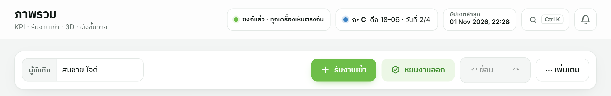
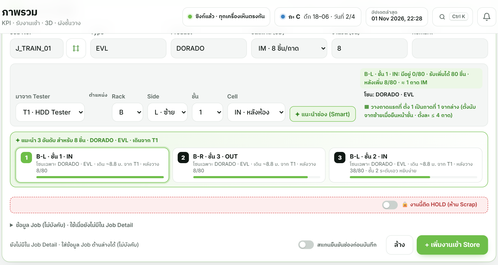
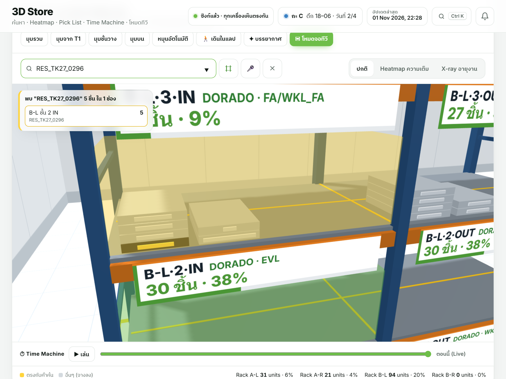
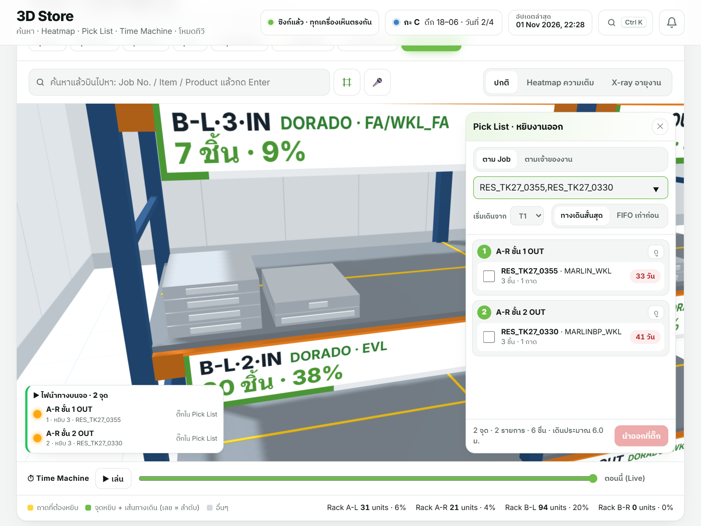
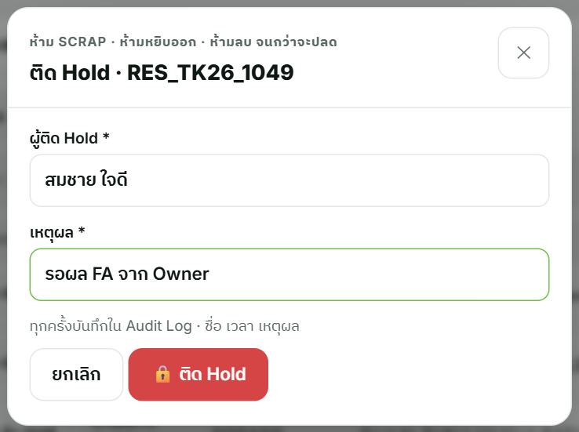
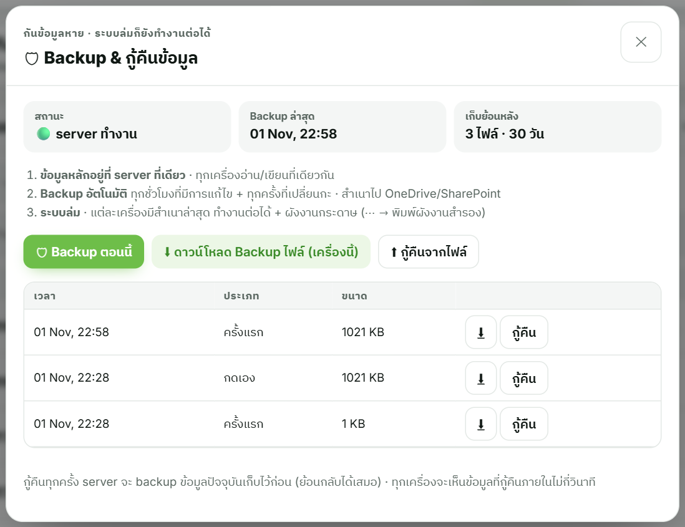
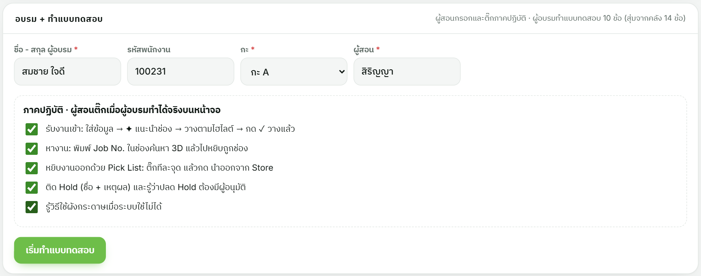
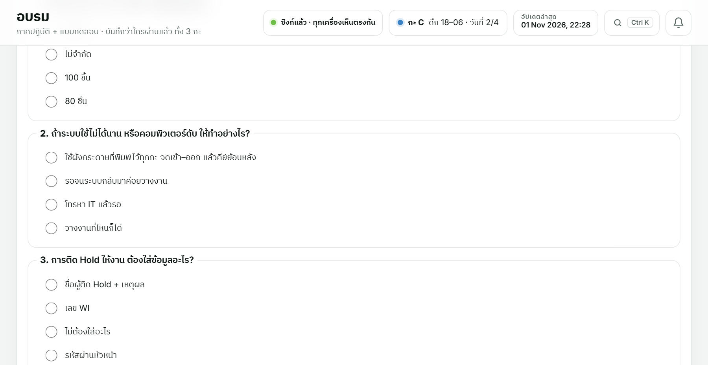

HSA RESONANCE LAB · คู่มืออบรม
การใช้งาน Resonance Store
สำหรับพนักงานทั้ง 3 กะ (A · B · C)
ใช้เวลาอบรมประมาณ 30 นาที/คน: อธิบาย 10 นาที · ฝึกบนหน้าจอจริง 15 นาที · ทำแบบทดสอบ 5 นาที
เกณฑ์ผ่าน: ภาคปฏิบัติครบ 5 ข้อ และ แบบทดสอบ 8/10 ข้อขึ้นไป · บันทึกผลในแอป เมนู "อบรม"
กฎทอง 5 ข้อ
① ใส่ชื่อตัวเองในช่อง "ผู้บันทึก" ก่อนทำงานทุกครั้ง
② วางงานตามช่องที่ระบบแนะนำ (สีเขียว) แล้วกด ✓ วางแล้ว
③ หางานด้วยการพิมพ์ Job No. ไม่ต้องเดินหา
④ งาน HOLD ห้าม Scrap ห้ามหยิบ ห้ามลบ ระบบจะกันไว้
⑤ ระบบมีปัญหา ใช้ผังกระดาษ แล้วคีย์ย้อนหลัง
② วางงานตามช่องที่ระบบแนะนำ (สีเขียว) แล้วกด ✓ วางแล้ว
③ หางานด้วยการพิมพ์ Job No. ไม่ต้องเดินหา
④ งาน HOLD ห้าม Scrap ห้ามหยิบ ห้ามลบ ระบบจะกันไว้
⑤ ระบบมีปัญหา ใช้ผังกระดาษ แล้วคีย์ย้อนหลัง
1. แอปนี้ช่วยอะไร และเริ่มใช้งาน
Resonance Store บอกว่างานแต่ละงานอยู่ช่องไหนของ Rack A / B (24 ช่อง ช่องละไม่เกิน 80 ชิ้น) · งานไหนติด Hold · งานไหนค้างนาน ทุกเครื่องในแลปเห็นข้อมูลชุดเดียวกัน
เปิดใช้งาน
- เปิด Edge แล้วเข้าที่อยู่ของ server ที่หัวหน้ากำหนด (ทางลัดบนหน้าจอ)
- พิมพ์ชื่อของคุณในช่อง "ผู้บันทึก" ทุกการแก้ไขจะมีชื่อคุณกำกับ
- ดูป้ายสถานะมุมบน ต้องเป็นสีเขียว "ซิงก์แล้ว · ทุกเครื่องเห็นตรงกัน"

| ป้ายสถานะ | ความหมาย | ต้องทำอะไร |
|---|---|---|
| ซิงก์แล้ว | ปกติ ทุกเครื่องเห็นตรงกัน | ทำงานได้เลย |
| ออฟไลน์ · เก็บในเครื่องนี้ | เชื่อม server ไม่ได้ชั่วคราว | ทำงานต่อได้ ข้อมูลส่งขึ้นเองเมื่อกลับมา · ถ้านานเกิน 15 นาที แจ้งผู้ดูแลระบบ |
| โหมดเครื่องเดียว | เปิดผิดที่ (เปิดเป็นไฟล์) | ปิดแล้วเปิดใหม่จากทางลัดของ server |
2. รับงานเข้า Store
- กด + รับงานเข้า (หน้า ภาพรวม)
- กรอก Job No. · Type · Product · จำนวน และเลือก มาจาก Tester
- กด ✦ แนะนำช่อง (Smart) ระบบเลือกช่องที่ถูกโซน มีที่พอ และใกล้ Tester ให้ 3 อันดับ
- เลือกอันดับ 1 (หรือช่องที่เหมาะ) แล้วกด + เพิ่มงานเข้า Store
- เดินไปวางถาดตามไฮไลต์สีเขียวบนจอ แล้วกด ✓ วางแล้ว ไฮไลต์จะดับ

ระบบจะไม่บันทึกถ้า…วางผิดโซน (Product / Type ไม่ตรงกับช่อง) · หรือทำให้ช่องเกิน 80 ชิ้น → เลือกช่องใหม่ หรือกด ✦ แนะนำช่อง
งานนี้ติด Hold ตั้งแต่รับเข้า?เปิดสวิตช์ "งานนี้ติด HOLD (ห้าม Scrap)" ในฟอร์ม ระบบจะส่งงานไปโซน HOLD
หมายเหตุ: ปุ่ม ⌗ และสวิตช์ "สแกนยืนยันช่องก่อนบันทึก" เป็นของเฟสสแกน QR ซึ่งยังไม่เริ่มใช้ (รอเครื่องสแกนที่ผ่านกฎคลีนรูม) ตอนนี้ไม่ต้องใช้
3. หางาน (เจ้าของงานขอคืน)
- ไปที่เมนู 3D Store
- พิมพ์ Job No. ในช่องค้นหาแล้วกด Enter
- ระบบบินไปที่ช่องนั้น ไฮไลต์สีเหลือง และบอก Rack · ชั้น · ช่อง · จำนวน
- เดินไปหยิบที่ช่องนั้นได้เลย ไม่ต้องเดินหาทีละชั้น

4. หยิบงานออก ด้วย Pick List
- กด หยิบงานออก (หรือ Pick List ในหน้า 3D)
- ใส่ Job ที่ต้องหยิบ (หลายงานคั่นด้วย , ได้) หรือเลือก "ตามเจ้าของงาน"
- ระบบไฮไลต์สีส้มทุกจุด เรียงลำดับตามทางเดินสั้นที่สุดจาก Tester
- หยิบทีละจุด แล้วติ๊กในรายการ ไฮไลต์จุดนั้นจะดับ
- ครบแล้วกด นำออกที่ติ๊ก ระบบบันทึกการนำออกให้อัตโนมัติ

งาน HOLDติ๊กหยิบไม่ได้ ระบบล็อกไว้ ต้องปลด Hold ก่อน
5. งาน HOLD (ห้าม Scrap)
ติด Hold
- ไปที่เมนู Jobs หาแถวของงาน
- กดปุ่ม ติด Hold (เมื่อติดแล้วปุ่มจะเปลี่ยนเป็น 🔒 HOLD)
- ใส่ ชื่อผู้ติด Hold และ เหตุผล (บังคับ)
- กด ติด Hold งานขึ้นป้ายแดงทุกหน้าจอ และติดป้าย HOLD สีแดงที่ตัวงาน
ปลด Hold
- กดปุ่ม 🔒 HOLD ที่งานนั้น (หรือ ปลด ในแผงงาน Hold หน้าภาพรวม)
- ใส่ ชื่อผู้อนุมัติ และ เหตุผล (บังคับ)
- ทุกครั้งบันทึกใน Audit Log ตรวจย้อนหลังได้

งาน Hold ทำไม่ได้ทั้ง 3 อย่างScrap ✗ · หยิบออก ✗ · ลบ ✗ — ถ้ามีคนพยายาม ระบบจะเด้งกลับ และนับเป็นครั้งที่ "ระบบกันได้"
ตรวจทุกกะ (Roving audit)ทุกกะตรวจว่างาน Hold อยู่ครบและมีป้ายแดง แล้วบันทึกผลในเมนู Insights ส่วน Cycle Count (ตรวจงาน Hold ประจำกะ)
6. เมื่อระบบมีปัญหา และการแก้ไขที่ผิด
| เหตุการณ์ | ทำแบบนี้ |
|---|---|
| บันทึกผิดเมื่อสักครู่ | กด ↶ ย้อน (ย้อนได้หลายครั้ง) · กด ↷ เพื่อทำซ้ำ |
| ป้ายขึ้น "ออฟไลน์" | ทำงานต่อได้ ข้อมูลจะส่งขึ้นเอง · ถ้านานเกิน 15 นาที แจ้งผู้ดูแลระบบ |
| คอมดับ / ระบบใช้ไม่ได้นาน | ใช้ผังกระดาษที่พิมพ์ไว้ทุกกะ · จดงานเข้า–ออก (Job, ช่อง, จำนวน, เวลา, ชื่อ) · คีย์เข้าระบบเมื่อกลับมา |
| หางานไม่เจอในระบบ | ค้นด้วยเลขบางส่วน หรือ Product · ถ้ายังไม่เจอ แจ้งหัวหน้ากะ ห้ามเดาตำแหน่ง |
| งานค้าง ≥ 14 วัน | ระบบขึ้นรายการ "งานค้าง ≥ 14 วัน · แจ้งเจ้าของงาน" ในเมนู Insights · ส่งอีเมลแจ้ง Owner ให้คืนหรือตัดสินใจ |

7. ขั้นตอนอบรมและสอบ (สำหรับผู้สอน)
- อธิบายหัวข้อ 1–6 ของคู่มือนี้ (10 นาที)
- ให้ผู้อบรมทำจริงบนหน้าจอทีละข้อตามภาคปฏิบัติ 5 ข้อ (15 นาที) · ใช้ Job ทดสอบ แล้วกด ↶ ย้อน หลังฝึก
- เปิดเมนู อบรม กรอกชื่อ รหัสพนักงาน กะ และชื่อผู้สอน แล้วติ๊กภาคปฏิบัติข้อที่ทำได้จริง
- กด เริ่มทำแบบทดสอบ ให้ผู้อบรมตอบ 10 ข้อเอง (สุ่มจาก 14 ข้อ ไม่ซ้ำกันทุกคน)
- ผ่าน = 8/10 ขึ้นไป + ภาคปฏิบัติครบ · ไม่ผ่าน ระบบแสดงข้อที่ผิดพร้อมคำอธิบาย ให้ทบทวนแล้วสอบใหม่
- จบรอบอบรม กด พิมพ์ใบบันทึกการอบรม ให้ผู้อบรมและผู้สอนเซ็น เก็บเข้าแฟ้ม


ดูว่าใครอบรมแล้วเมนู อบรม ด้านบนแสดงจำนวนคนที่ผ่านแยก กะ A · B · C และตารางรายชื่อ (กรองตามกะได้ · Export CSV ได้) ข้อมูลเก็บบน server และอยู่ใน Backup
8. ภาคปฏิบัติ 5 ข้อ (ใช้เป็นเช็กลิสต์ตอนสอน)
| # | ผู้อบรมทำได้จริงบนหน้าจอ | ผ่าน |
|---|---|---|
| 1 | รับงานเข้า: ใส่ข้อมูล → ✦ แนะนำช่อง → วางตามไฮไลต์ → กด ✓ วางแล้ว | |
| 2 | หางาน: พิมพ์ Job No. ในช่องค้นหา 3D แล้วไปหยิบถูกช่อง | |
| 3 | หยิบงานออกด้วย Pick List: ติ๊กทีละจุด แล้วกด นำออกที่ติ๊ก | |
| 4 | ติด Hold (ชื่อ + เหตุผล) และรู้ว่าปลด Hold ต้องมีผู้อนุมัติ | |
| 5 | รู้วิธีใช้ผังกระดาษเมื่อระบบใช้ไม่ได้ |
ปุ่มที่ใช้บ่อย
| ปุ่ม / เมนู | ใช้ทำอะไร |
|---|---|
| + รับงานเข้า | เพิ่มงานเข้า Store |
| ✦ แนะนำช่อง (Smart) | ให้ระบบเลือกช่องที่ถูกโซนและใกล้ที่สุด |
| ✓ วางแล้ว | ยืนยันว่าวางถาดแล้ว ไฮไลต์สีเขียวดับ |
| ช่องค้นหา 3D | พิมพ์ Job No. เพื่อหาตำแหน่ง |
| หยิบงานออก / Pick List | หยิบหลายงานตามทางเดินสั้นที่สุด |
| ติด Hold / 🔒 HOLD | ติดหรือปลด Hold (เมนู Jobs) |
| ↶ ย้อน · ↷ | ย้อน / ทำซ้ำ การบันทึกล่าสุด |
| คู่มือ (เมนูซ้ายล่าง) | เปิดคู่มือสั้นและทัวร์แนะนำในแอป |
คู่มืออบรม Resonance Store · ฉบับเว็บ (เนื้อหาเดียวกับไฟล์ PDF)